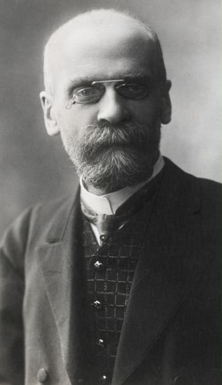
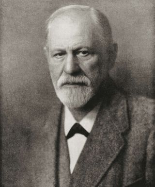
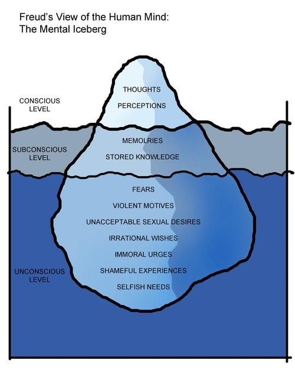
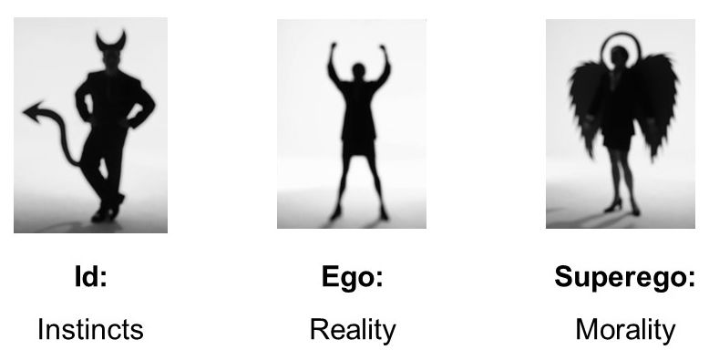

Durkheim believed that every society has rules and expectations about how people ought to behave towards each other. But when people do not know what is expected of them because norms are unclear, they may experience a state of anomie or the lack or breakdown of social norms.
The increased complexity within a society necessitated the creation of more specialized jobs. Hence, Durkheim theorized that organic specialization occurs when workers perform specific tasks, all geared for the benefit of the entire system. But the system will only function properly when all parts are working.
The specialization of jobs, however, is said to have weakened the bond among the workers. Relationships became more impersonal because of the lack of interaction. This has led to a breakdown in social norms because social rules are not being transmitted through social interaction, hence the state of anomie.

Freud and the Role of Instincts in Human Development
As we learned in Unit 1, one of Freud’s biggest ideas is that human development is determined by early events in childhood. Two people can be in the same situation, but how they see it or react to it may be completely different from one another, because it is influenced by their past experiences. Freud offered an understanding of how a person’s unconscious mind interplay in the conscious interpretation of his/her surroundings that motivates his/her behavior.
For him, instinct has a key role in the motivation of human behavior. He presented two basic ones that represent the primary outlets for biological energy: Eros which represents the creative life force or sexual drive; and Thanatos which is the destructive force or the death drive.
Both instincts are empowered by libido energy or the sex drive. He further offered ideas on stages of psychosexual development (oral, anal, phallic, latency, and genital) that must be fulfilled from childhood to create a healthy personality in adulthood.

|
While it is said that he received a great deal of criticism on his theories for lack of evidence and their sexist nature, his idea that personality is developed at a very young age and is motivated by internal (sex) drives is a widely recognized contribution in the field of psychology. The Freudian construct of the human mind is divided into the conscious and unconscious which he compared to an iceberg. The conscious part makes up the smaller and visible part of an iceberg, while the unconscious part of the human mind is the larger and hidden part of the iceberg. Furthermore, he divided the human consciousness into three parts: the id, the ego, and the superego. |

The id (instinct) is the unconscious part of the human psyche that meets the instinctual, impulsive, and primitive needs of the mind. It answers to the mind’s immediate pleasure that contains sexual and aggressive drives and hidden memories.
If it becomes too strong, it is said to result in hedonistic behavior which is self-gratifying and self-centered, always concerned about meeting a person’s immediate needs without thinking of future consequences.
The superego (morality) is the pre-conscious part of the mind that seeks perfection and controls our sense of guilt and right and wrong. It is the direct opposite of id. It is said to reflect the values and morals of society learned from one’s parents or family at around three to five years of age.
The superego checks the id’s impulses particularly if forbidden by society. If a person leans more towards it, s/he can be considered prudish, too sensitive, or even moralistic.
The ego (reality) acts as the conscious part of the psyche. It is the decision-making component of personality where it controls a person’s most immediate behaviors and thoughts.
It acts as the mediator between the id and the superego. The ego operates according to the principle of reality by considering social norms, realities, and etiquettes in deciding how to behave.
For the ego to keep in check the id or the superego to become too strong, it employs coping mechanisms to bring about balance. The ego does it if it fails in its attempt to use the reality principle and at the same time to ward off the feeling of anxiety. This ego defense mechanism protects the mind from psychological and emotional trauma.
As we can observe in the Canadian youth of today, factors such as job security, peer relationships, finances, and personal safety, among others contribute to their stress. How they interpret what they see and how they react to situations is influenced by their unconscious drives and ego defense mechanisms.
It helps to keep their mind in a relative state of equilibrium and cope with life in general. This is the state of a balanced mind or a healthy psyche. We do not want an unbalanced psyche that can lead to psychosis or extreme outward behaviors.
Still within the purview of the concept of id, what separates us, humans, from animals is our ability to think before we act because we possess higher-order thought processes. But while we can rationalize a situation and construct hypothetical outcomes for a given scenario, we also recognize the importance of instincts in our behavior.
There is this survival instinct which is popularly known as fight or flight or the body’s instinctual reaction to a stressful situation such as increased blood flow and adrenaline to prepare the body and mind for instant action. Stress is said to trigger this primal instinct.
American neuroscientist Paul D. Maclean (1913-2007) developed the Triune brain theory which shows a model of brain development in three layers, occurring in response to an evolutionary survival need.
Reptilian system - part of the brain responsible for instinctual behaviors like aggression, dominance, territoriality, and ritual displays.
Paleomammalian complex (limbic system) consists of the septum, amygdala, hypothalamus, hippocampal complex, and cingulate cortex. It controls the production of hormones and chemicals in the body necessary for survival and development.
Neomammalian complex (neocortex) consists of the cerebral neocortex that is uniquely found in mammals. This part of the brain allows for creative thinking, language, abstraction, and perception.
Even if humans are said to have higher-order thought processes, it is not uncommon for primal instincts to take over our brains and body. Not everyone in society reacts the same way when faced with the same stressors, it hinges on the individuality of the person. Each person has a varying stress tolerance.
True or False
True or False
True or False
True or False
True or False